Blog dan Edukasi
Kumpulan artikel edukatif, panduan memilih videotron indoor dan outdoor, tips perawatan, serta kabar teknologi display LED terbaru.
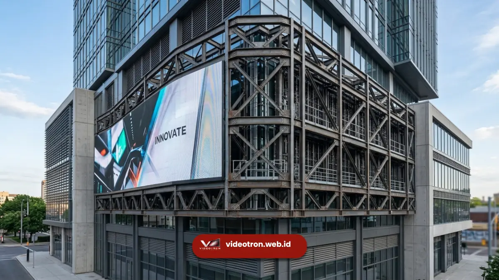
Umur Pakai VideotronUmur Pakai Videotron: Berapa Lama Bisa Bertahan?
Cari tahu berapa lama umur pakai videotron, faktor yang memengaruhi daya tahannya, dan cara merawatnya agar tetap optimal. Konsultasikan kebutuhan Anda sekarang.
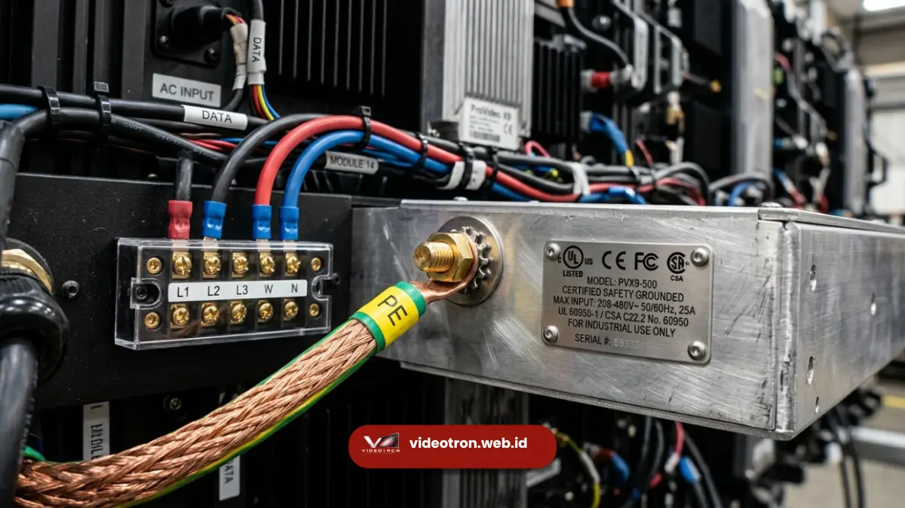
Sertifikasi VideotronSertifikasi Videotron: Standar Keamanan Instalasi Gedung
Ketahui sertifikasi penting yang wajib dimiliki videotron untuk instalasi di gedung agar aman dan sesuai regulasi. Konsultasikan kebutuhan Anda sekarang.
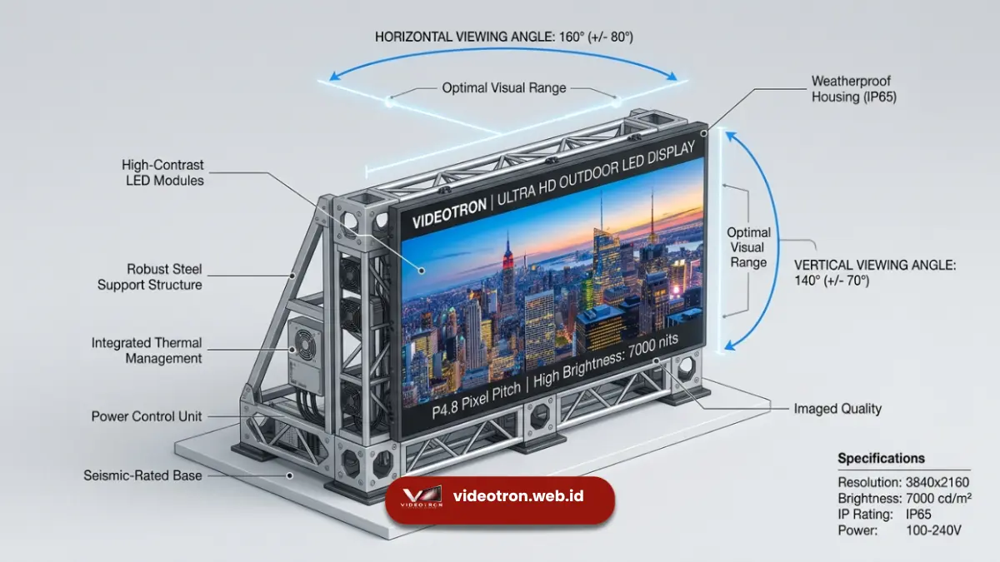
Viewing AngleViewing Angle Videotron: Sudut Pandang Terbaik untuk Audiens
Pelajari apa itu viewing angle videotron, cara mengukurnya, dan faktor yang memengaruhi kualitas tampilan dari berbagai sudut. Konsultasikan kebutuhan Anda sekarang.
 Panduan Vendor
Panduan Vendor
Vendor Videotron Profesional untuk Korporat & Instansi
Cari vendor videotron terpercaya untuk kantor, instansi, atau event korporat? Konsultasi kebutuhan Anda di vendorvideotron.web.id sekarang.
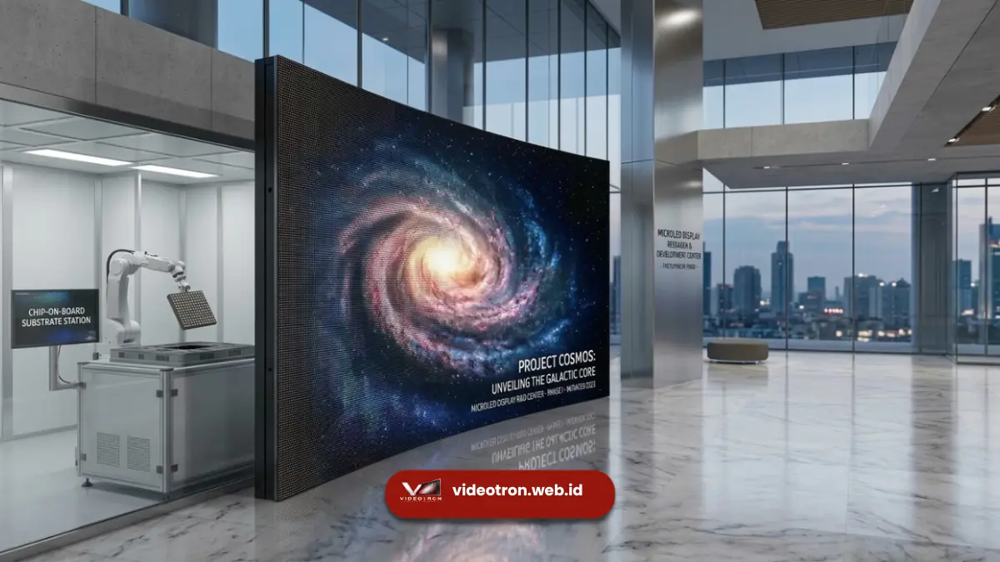
Panduan Harga7 Faktor Utama Penentu Harga Videotron di Pasaran
Ketahui 7 faktor yang menentukan harga videotron sebelum memutuskan. Konsultasikan kebutuhan Anda bersama vendorvideotron.web.id sekarang.
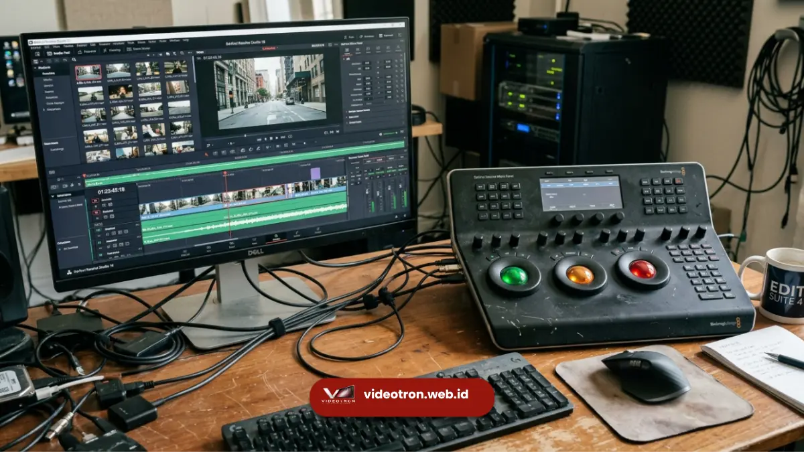
Spesifikasi TeknisSpesifikasi Teknis Videotron: Pixel Pitch & Kecerahan
Pahami spesifikasi teknis videotron sebelum memesan. Konsultasikan kebutuhan spesifikasi Anda bersama vendorvideotron.web.id sekarang.
 Supplier Videotron
Supplier Videotron
Supplier Videotron Jakarta Terpercaya, Cek Harganya
Cari supplier videotron Jakarta yang terpercaya dan tahan lama? Konsultasi gratis kebutuhan videotron korporat Anda sekarang juga.
Harga Sewa & Beli Videotron Jakarta Terbaru
Simak faktor penentu harga videotron di Jakarta dan dapatkan estimasi biaya sesuai kebutuhan bisnis Anda dari vendorvideotron.web.id.
 Spesifikasi Videotron
Spesifikasi Videotron
Jenis & Spesifikasi Videotron Korporat Jakarta
Kenali jenis dan spesifikasi videotron yang tepat untuk kebutuhan korporat di Jakarta bersama vendorvideotron.web.id.
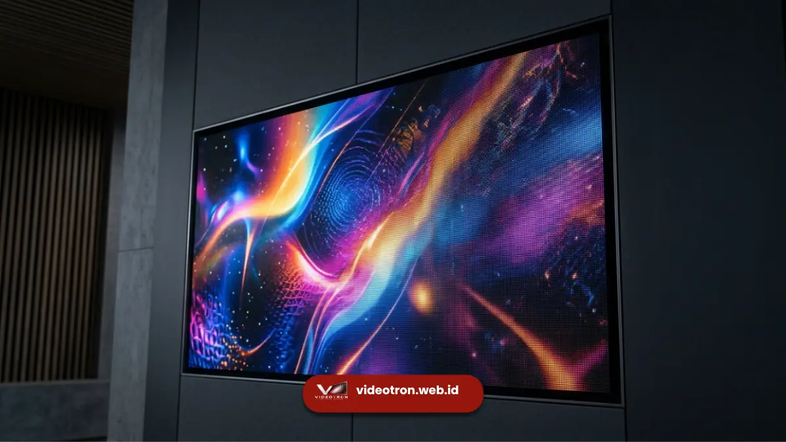
Refresh RateRefresh Rate Videotron 3840Hz: Kenapa Penting?
Refresh rate videotron menentukan kenyamanan visual saat direkam kamera. Pelajari kenapa 3840Hz jadi standar utama layar LED modern.
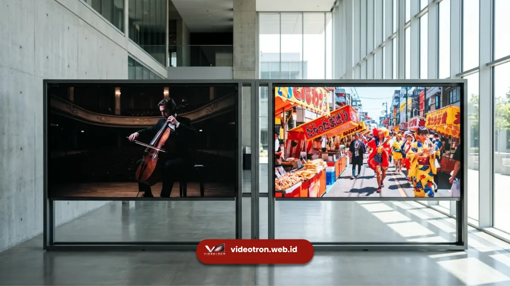
Contrast RatioContrast Ratio Videotron: Kunci Kualitas Warna Layar
Contrast ratio videotron memengaruhi ketajaman dan kedalaman warna layar LED. Simak penjelasan lengkap dan cara memahami spesifikasinya.
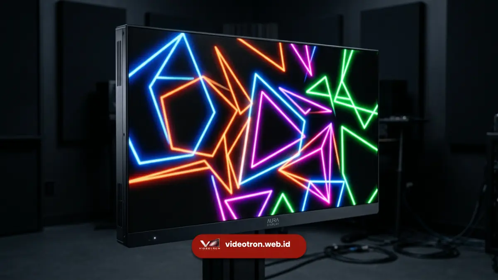
GrayscalePeran Grayscale Videotron untuk Transisi Warna Halus
Grayscale videotron menentukan kehalusan gradasi warna pada layar LED. Pahami fungsinya dan pengaruhnya terhadap kualitas tampilan.
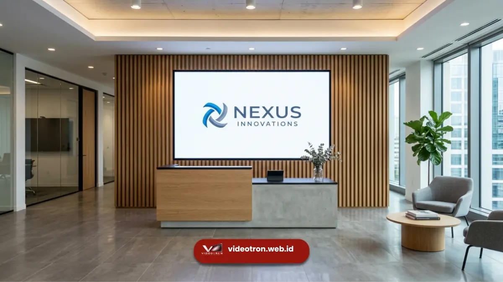
Design KorporatDesign Videotron Korporat: Solusi Visual Premium 2026
Wujudkan branding korporat lebih tajam lewat design videotron custom. Panduan lengkap dari konsultasi hingga instalasi.
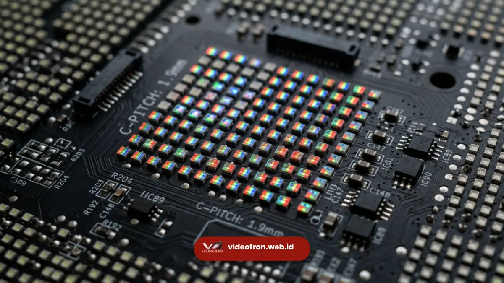
Faktor Harga7 Faktor Penentu Harga Design Videotron Korporat
Kenali faktor penentu biaya design videotron sebelum memesan agar anggaran korporat lebih terencana.
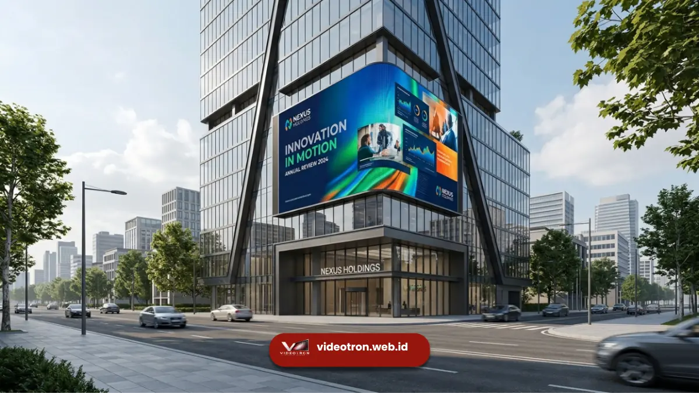
Proses & InstalasiProses Design Videotron Custom untuk Kebutuhan Korporat
Pahami tahapan design videotron custom dari konsultasi hingga instalasi untuk hasil yang sesuai target.
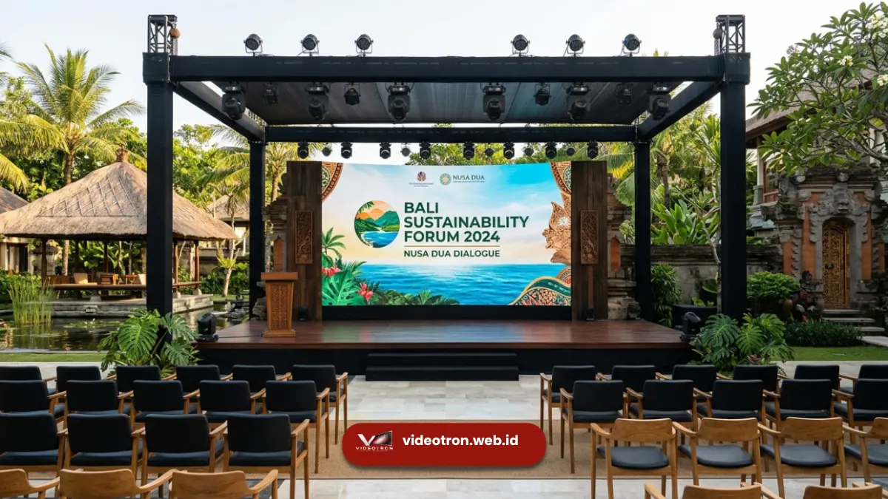
Videotron BaliVideotron Bali Profesional untuk Event Korporat Anda
Sewa videotron Bali kualitas premium untuk event korporat, MICE, dan brand activation dengan layanan lengkap.
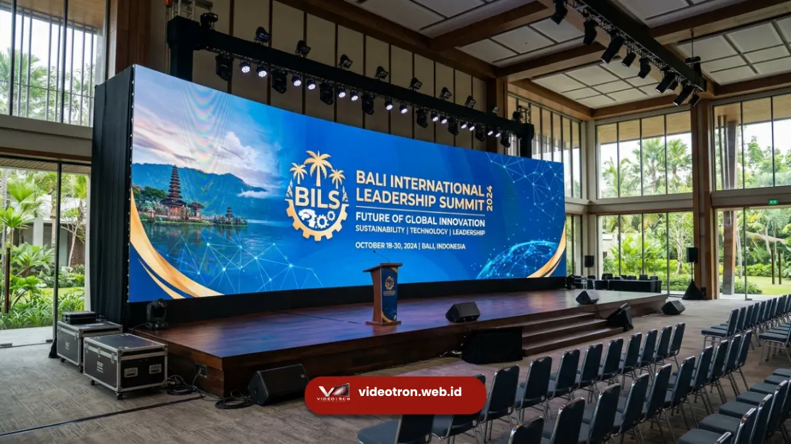
Sewa & EventSewa Videotron Bali untuk Konser dan Acara Korporat
Layanan sewa videotron Bali dengan modul LED tajam, instalasi, dan tim teknis siap pasang untuk event Anda.
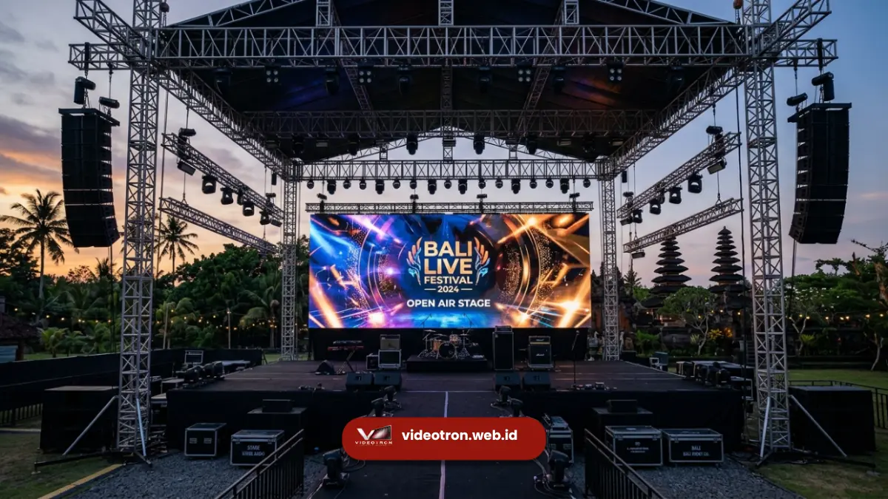
Panduan BiayaHarga Sewa Videotron Bali, Ini Faktor Penentunya
Simak faktor-faktor utama yang memengaruhi struktur harga sewa videotron di Bali untuk perencanaan anggaran.
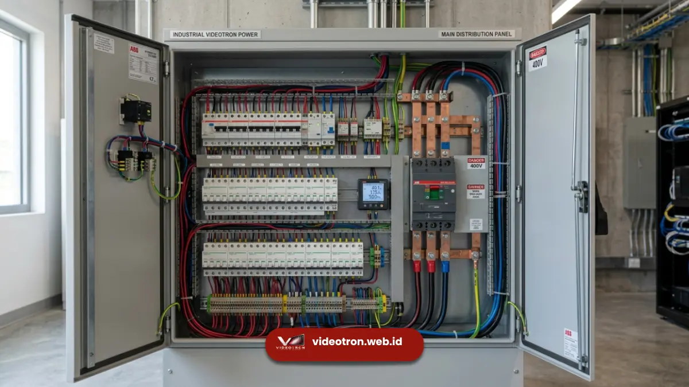
Panduan Daya ListrikCara Menghitung Konsumsi Daya Videotron agar Hemat
Pelajari cara menghitung watt puncak dan watt rata-rata per meter persegi agar instalasi listrik aman dan efisien.
 Panduan Komponen
Panduan Komponen
Mengenal Komponen Videotron dari Modul hingga Sending Card
Kenali komponen videotron mulai dari modul LED, power supply, hingga sending card untuk menilai kualitas sistem secara objektif.
7 Faktor Utama yang Memengaruhi Harga Videotron
Cari tahu 7 faktor harga videotron mulai dari pixel pitch, tipe LED, hingga garansi. Hitung estimasi biaya Anda di sini.
 Panduan dan Spesifikasi
Panduan dan Spesifikasi
Cara Menghitung Ukuran Videotron yang Tepat
Pelajari cara menghitung ukuran videotron yang tepat berdasarkan aspek rasio dan jumlah kabinet modul.
 Perbandingan dan Panduan
Perbandingan dan Panduan
Videotron Indoor vs Outdoor: 5 Perbedaan Utama
Cari tahu 5 perbedaan utama videotron indoor dan outdoor mulai dari IP rating hingga maintenance.
Cara Memilih Pixel Pitch Videotron Berdasarkan Jarak Pandang Ideal
Bingung memilih pixel pitch videotron yang tepat? Pelajari rumus jarak pandang ideal dan panduan lengkapnya di sini.
Apa Itu Pixel Pitch? Panduan Memilih Layar LED
Pahami apa itu pixel pitch dan pengaruhnya terhadap ketajaman gambar videotron sebelum menentukan pilihan layar LED untuk acara Anda.
 Panduan
dan Istilah
Panduan
dan Istilah
Perbedaan LED Display dan Videotron untuk Pemula
Bingung beda LED display dan videotron? Simak penjelasan sederhana istilah teknis dan komersial ini agar tidak salah pilih layar.
 Teknologi
dan Cara Kerja
Teknologi
dan Cara Kerja
Cara Kerja Videotron: Proses di Balik Layar LED Raksasa
Pelajari cara kerja videotron dari modul LED hingga pengolahan sinyal video. Pahami prosesnya sebelum memilih videotron untuk acara Anda.
 Branding
dan Bisnis
Branding
dan Bisnis
5 Fungsi Utama Videotron untuk Branding dan Komunikasi Bisnis
Pelajari 5 fungsi utama videotron untuk meningkatkan branding, awareness, dan keterikatan audiens bisnis Anda.
 Sejarah
dan Teknologi
Sejarah
dan Teknologi
Sejarah Perkembangan Videotron: Dari Lampu Pijar hingga LED COB
Telusuri sejarah perkembangan videotron dari era papan skor lampu pijar hingga teknologi LED COB modern.
 Panduan
dan Pengertian
Panduan
dan Pengertian
Apa Itu Videotron? Pengertian, Fungsi, dan Jenisnya untuk Bisnis
Temukan pengertian videotron, jenis indoor dan outdoor, serta fungsi utamanya untuk mengoptimalkan branding visual bisnis Anda.
 Edukasi
Edukasi
Cara Memilih Pitch Pixel (P) yang Tepat untuk Videotron Indoor
Pelajari bagaimana menentukan resolusi videotron berdasarkan jarak pandang minimum audiens Anda.
 Teknologi
Teknologi
Mengenal IP65: Standar Ketahanan Videotron Outdoor
Apa itu IP Rating? Mengapa sangat penting untuk instalasi billboard digital di luar ruangan.
 Inspirasi
Inspirasi
5 Tren Digital Signage untuk Retail di Tahun 2026
Dari transparent LED hingga interactive display, lihat bagaimana teknologi LED mengubah toko offline.
 Tips
dan Trik
Tips
dan Trik
Pentingnya Perawatan Berkala untuk Videotron
Langkah-langkah sederhana agar videotron Anda bisa berumur panjang dan selalu tampil prima.